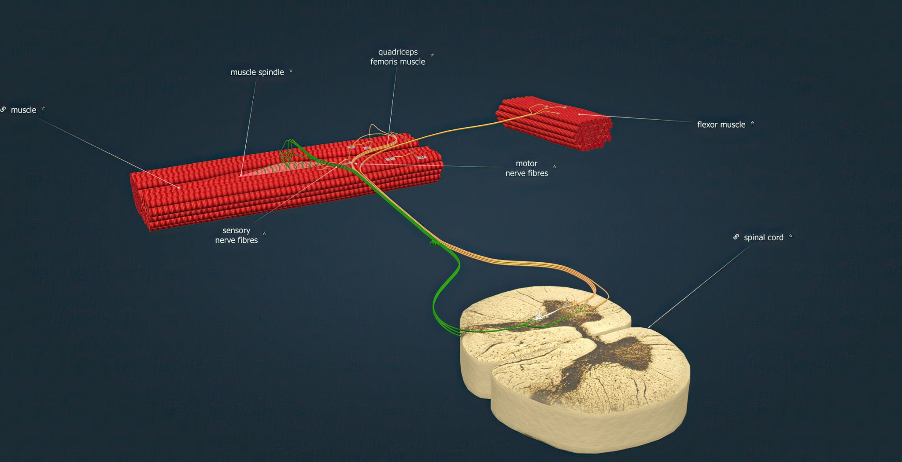

When most people think about losing the ability to feel pain, they imagine an invulnerability story. Pop culture treats congenital insensitivity to pain as a flawed superpower, a biological quirk that lets you step on glass or hold hot coals without flinching. Better yet, a heart that never breaks.
Alexander Chesler and Carsten Bönnemann began examining a handful of patients with rare, loss of function mutations in a gene called PIEZO2. When these patients were tested, their pain thresholds came back completely normal, a pinprick still felt sharp, a hot stove still hurt. What they’d actually lost wasn’t pain at all. It was the subconscious software that tells the brain where the body lives in space.

Split sensation into PIEZO2 constituent physics.
We are used to thinking of touch as a single sense, but the nervous system treats temperature, chemical irritants, and mechanical force as entirely distinct languages.
We’ve known the molecular receptors responsible for heat and cold work that earned David Julius part of the 2021 Nobel Prize in Physiology or Medicine. But the hardware responsible for sensing physical force remained elusive until Ardem Patapoutian, sharing that same Nobel Prize, identified the PIEZO family of ion channels.
PIEZO2 is a massive, three-bladed, propeller-shaped protein embedded in the membranes of our sensory neurons.
When your skin is stretched, poked, or compressed, or when a muscle spindle lengthens as you bend your elbow, the cell membrane physically pulls open the blades of the PIEZO2 channel.
Positively charged ions rush into the cell, firing an electrical signal to the brain. Force is converted into thought in microseconds.
Interactive 3D structure: mouse PIEZO2 mechanosensitive channel, cryo-EM (PDB 6KG7; Wang et al., 2019, Nature). Click and drag to rotate the propeller blades; scroll to zoom.
In humans born without functional PIEZO2, the consequences reveal just how much invisible work mechanical sensation does behind the scenes.
If you ask a person with a PIEZO2 mutation to close their eyes and touch their nose with an index finger, they cannot do it.
Without visual confirmation, their brain loses track of where their hands are. If you blindfold them and gently move their foot up or down, they cannot tell you which direction it moved, or if it moved at all. They lack proprioception (the “sixth sense” generated by continuous mechanical feedback from muscle spindles and joint receptors).
To walk, they must look directly at their feet, manually substituting visual data for the automated subconscious telemetry their brain ought to be receiving from their legs. If you turn off the lights in a room, they will sway and fall, stripped of their internal coordinates in the dark.
Intriguingly, their pain sensation is almost eerily ordinary. They feel the burn of a hot stove and the sting of chili pepper at normal thresholds, because thermal and chemical nociceptors run on separate molecular machinery (like the TRPV family).
But tested against a pinprick or a blunt pressure probe, their mechanical pain thresholds come back indistinguishable from anyone else’s. This surprised even the researchers, since it meant the everyday sense of “ouch” doesn’t route through PIEZO2 at all. Somewhere in the skin, a separate circuit of pain fibers is doing that job on its own.
However, PIEZO2 doesn’t control whether touch turns into pain after an injury.
Healthy nervous systems develop tactile allodynia after a burn or a bruise. Patients without PIEZO2 never develop it. Light touch stays harmless, even on inflamed tissue, because the channel that would normally convert that touch into pain signaling simply isn’t there.
Chronic pain remains one of the most stubborn failures of modern pharmacology, largely because targeting broad pain pathways often numbs the entire nervous system or carries high addiction liabilities. PIEZO2 selectively encodes mechanical force and opens up hyper-targeted therapeutic possibilities, drugs that selectively dampen mechanical hypersensitivity in conditions like fibromyalgia or neuropathic pain without wiping out a patient’s ability to feel thermal danger or basic touch.
PIEZO2 is actively guiding how our bodies assemble themselves. Patients with PIEZO2 deficiency frequently develop severe scoliosis, joint hypermobility, and skeletal deformities. During development, the spine and joints rely on mechanical feedback from movement to align correctly. Without the constant tension readings supplied by PIEZO2, the body grows without knowing its own geometry.
Which brings us back to what sensory perception actually is.
We tend to view our senses as external tools, cameras and microphones taking in an outside world. But it’s also about defining the internal self. Literally It is the molecular architecture of presence, constantly anchoring your mind inside a physical structure.
Stripped of that single protein, the brain is simply left floating in space.
Further Reading
Chesler, A.T., Szczot, M., Bharucha-Goebel, D., et al. (2016). The Role of PIEZO2 in Human Mechanosensation. The New England Journal of Medicine, 375(14), 1355–1364. https://doi.org/10.1056/NEJMoa1602812
Nagi, S.S., Marshall, A.G., Makdani, A., et al. (2019). An ultrafast system for signaling mechanical pain in human skin. Science Advances, 5(7), eaaw1297. https://doi.org/10.1126/sciadv.aaw1297
Szczot, M., Liljencrantz, J., Ghitani, N., et al. (2018). PIEZO2 mediates injury-induced tactile pain in mice and humans. Science Translational Medicine, 10(462), eaat9892. https://doi.org/10.1126/scitranslmed.aat9892
Coste, B., Mathur, J., Schmidt, M., et al. (2010). Piezo1 and Piezo2 are essential components of distinct mechanically-activated cation channels. Science, 330(6000), 55–60. https://doi.org/10.1126/science.1193270
Woo, S.H., Lukacs, V., de Nooij, J.C., et al. (2015). PIEZO2 is the principal mechanotransducer of proprioception in mice. Nature Neuroscience, 18(12), 1756–1762. https://doi.org/10.1038/nn.4162
Notes
Banner photo: Cultured dorsal root ganglion (DRG) sensory neuron explant showing axonal outgrowth. Image via Wikimedia Commons, CC BY-SA 3.0.
{kind=link}